library(tidyverse)
library(gapminder)
ggplot(data = gapminder, mapping = aes(x = gdpPercap, y = lifeExp, col = continent)) +
geom_point()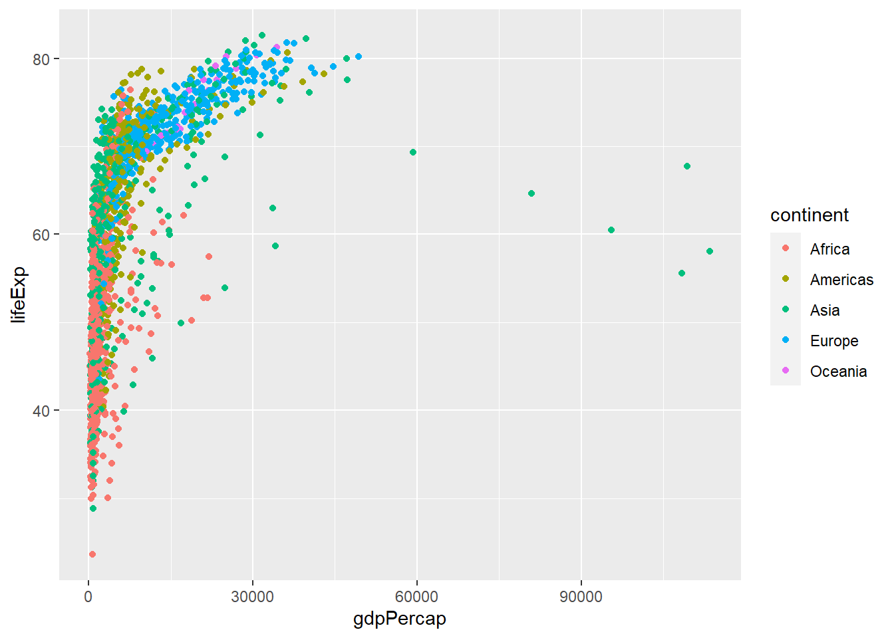
Gapminder - Koordinatensysteme, Scales und Themes
Die letzten Bausteine eines ggplots kennenlernen.
Feierabend (für heute)!
Im Rahmen unserer Analyse des gapminder Datensatzes wollten wir die den Zusammenhang zwischen dem Bruttoinlandsprodukt eines Landes und dessen Lebenserwartung untersuchen. Dazu haben wir die folgende Grafik erstellt.
library(tidyverse)
library(gapminder)
ggplot(data = gapminder, mapping = aes(x = gdpPercap, y = lifeExp, col = continent)) +
geom_point()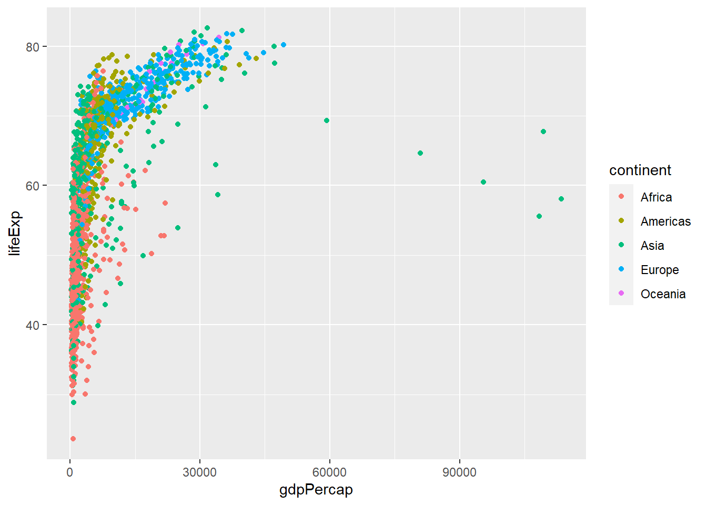
Es könnte von Vorteil sein, in diesen Plot reinzuzoomen. Beispielsweise könnten wir uns mal den BIP-Bereich von 0 bis 30000 genauer angucken. Ebenso ist vielleicht eine gute Idee die Lebenserwartungen zwischen 60 und 80 Jahren zu fokussieren. In ggplot2 erreichen wir dies, indem wir eine weitere Schicht zum Code hinzufügen (wie auch sonst). Hier benötigen wir die Schicht coord_cartesian(). Schauen wir mal was passiert, wenn wir den Befehl out-of-the-box verwenden.
ggplot(data = gapminder, mapping = aes(x = gdpPercap, y = lifeExp, col = continent)) +
geom_point() +
coord_cartesian()Es passiert nichts! Klasse. Das liegt daran, dass ggplot() in den Standardeinstellungen immer eine coord_cartesian() Schicht enthält. Wir müssen die Schicht also nur explizit angeben, wenn wir sie verändern wollen. Schauen wir mal in die Dokumentation, was es für Veränderungsmöglichkeiten gibt.
Hier hören sich xlim und ylim doch verdächtig danach an, als würden sie das machen, was wir brauchen. Die Dokumentation hat sogar ein Beispiel, um die Verwendung zu verdeutlichen. Dabei wird der standardmäßig in R vorhandende Datensatz mtcars verwendet. Dieser enthält Informationen über verschiedene Autos. Unter anderem gint es dort die Variablen Hubraum disp und Gewichtwt.
# Hier wird die Grafik erst in
# einer Variable zwischengespeichert...
p <- ggplot(
data = mtcars,
mapping = aes(disp, wt)
) +
geom_point() +
geom_smooth()
p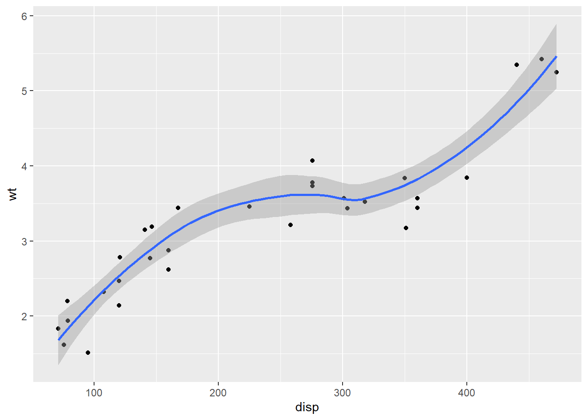
# ...und dann wird die Grafik nachträglich
# verändert.
p + coord_cartesian(xlim = c(325, 500))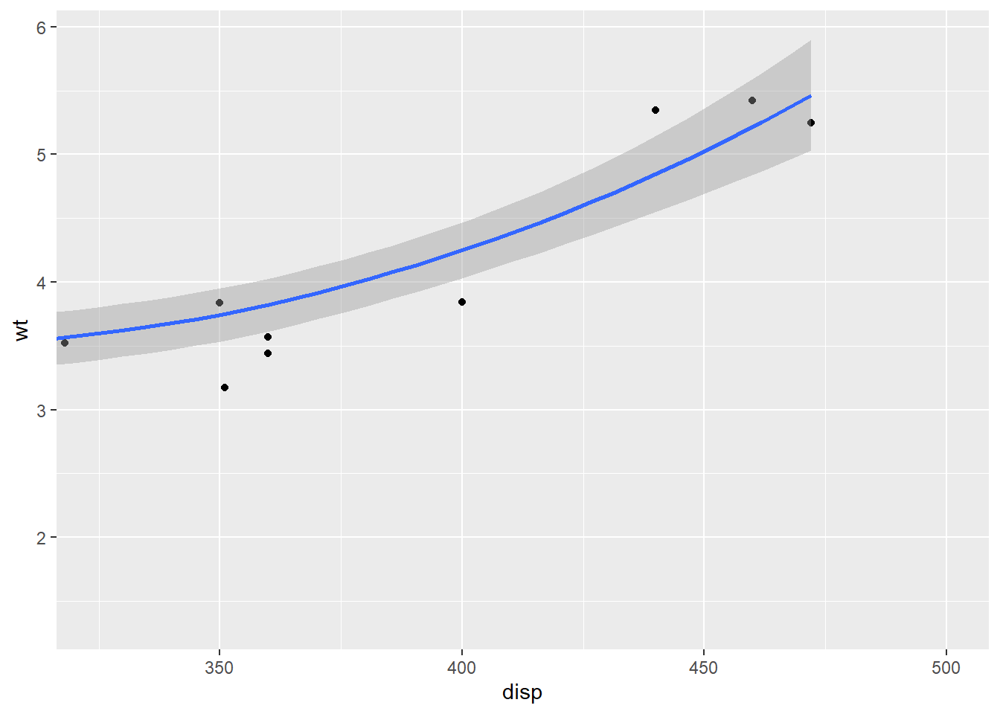
Hier wurde mittels der Funktion c() ein Vektor erzeugt. Dies scheinen die Argumente xlim und ylim so zu wollen. So sieht es aus, wenn man diese Funktion in freier Wildbahn verwendet, um einen Vektor zu erzeugen.
c(15, 20)[1] 15 20Nutze nun deine (hoffentlich) neugewonnenen Erkenntnisse, um unsere Ursprungsgrafik auf den gewünschten Bereich einzuschränken. Dies sieht dann folgendermaßen aus.
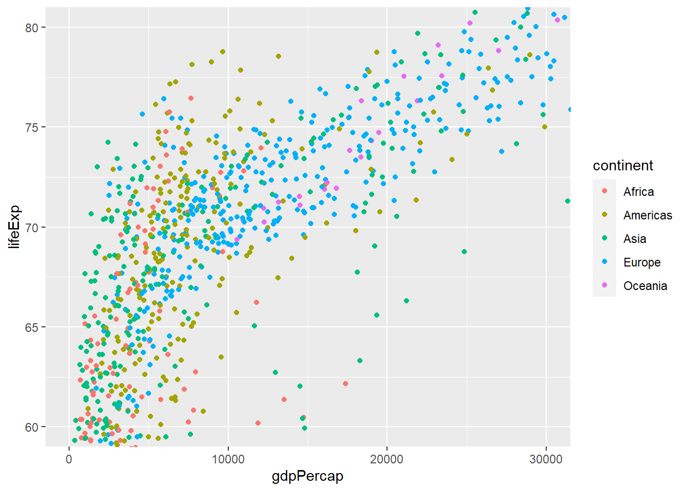
Da haben wir uns jetzt auf den Bereich konzentriert, indem ganz schön viel Wirrwarr ist. Machen wir doch einfach die Punkte ein bisschen transparent und fügen zusätzlich eine Ausgleichskurve ein. Das haben wir ja schon in dem mtcars Beispiel gesehen und können das nachmachen.
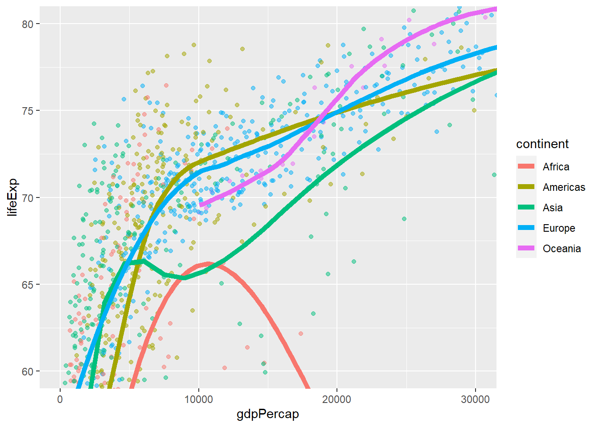
Insgesamt scheint es (mit Ausnahme von Afrika) einen positiven Zusammenhang zwischen Wohlstand (Indikator BIP) und Lebenserwartung zu geben. Wer hätte das erwartet.
Zoomen wir mal wieder ein bisschen raus.
ggplot(data = gapminder, mapping = aes(x = gdpPercap, y = lifeExp, col = continent)) +
geom_point(alpha = 0.5) +
coord_cartesian(xlim = c(0, 60000))
Wir sehen, dass es sehr niedrige und sehr hohe BIPs gibt. Diese große Bandbreite sorgt dafür, dass die Skala auf der x-Achse sehr viele Bereiche abdecken muss. Dabei ist die x-Achse sehr gleichmäßig aufgeteilt, d.h. ein “Kästchen” entspricht immer 10000$ und zwei “Kästchen” entsprechen dem doppelten. Wir sprechen hier von einer linearen Skala. Diese Skala ist oftmals sehr praktiksch. Allerdings führt sie hier durch die große Unterschiede des BIPs dazu, dass es in manchen Bereichen der Grafik sehr “gequetscht” ist.
Wir schaffen uns Abhilfe, indem wir zu einer logaritmischen Skala wechseln. Schauen wir uns das erstmal an.
ggplot(data = gapminder, mapping = aes(x = gdpPercap, y = lifeExp, col = continent)) +
geom_point(alpha = 0.5) +
scale_x_log10()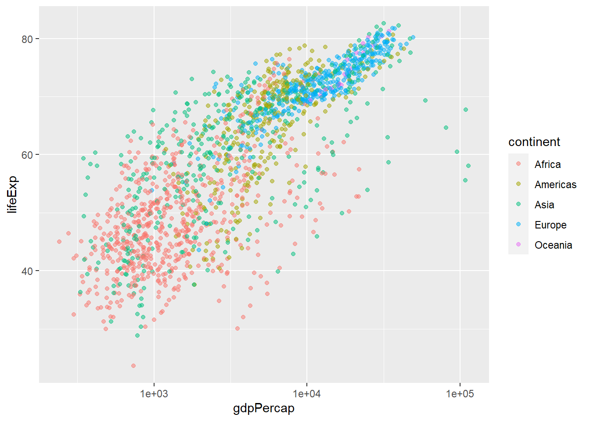
Hier wurden die Punkte entzerrt. Dies wurde dadurch erreicht, dass die Skala von Kästchen zu Kästchen wie 1000 - 10000 - 100000 wächst. Im Kontrast: Die lineare Skala würde in drei Kästchen wie 1000 - 2000 - 3000 wachsen. Somit wird bei der logarithmischen Skala potenziert. Insbesondere mussten wir nicht mehr in die x-Achse reinzoomen. Durch die logarithmische Skala konnten wir auch die echt großen BIPs abbilden.
In ggplot2 werden solche Transformationen der Aesthetics (in diesem Fall das x-Aesthetic) über scale_*()-Funktionen gesteuert. Für jedes verwendete Aesthetic fügt ggplot() automatisch die richtige scale_*() Schicht hinzu. Sonst müsste jeder Plot diese zusätzlich deklarieren. Beispielsweise so
ggplot(data = gapminder, mapping = aes(x = gdpPercap, y = lifeExp, col = continent)) +
geom_point(alpha = 0.5) +
coord_cartesian(xlim = c(0, 60000)) +
scale_x_continuous() +
scale_y_continuous() +
scale_color_discrete()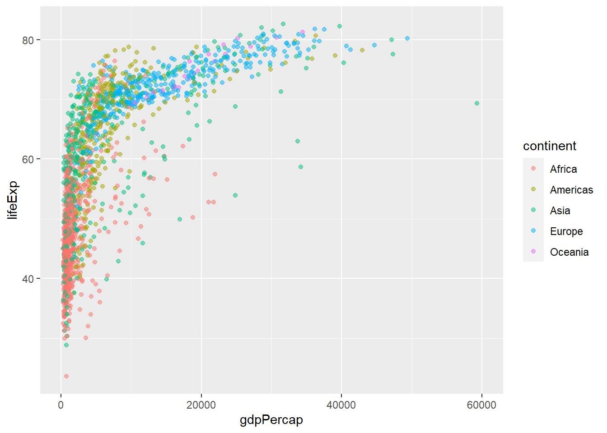
Das Benennungsschema der Skalenfunktionen ist also immer scale_<aesthetic>_<continuous|discrete|transformation>. Der letzte Teil wird dabei je nach Datentyp oder gewünschter Transformation gewählt (bspw. scale_color_discrete() für die kategorielle Variable continent). Auf diese Weise können wir auch die Farben anpassen. Beispielsweise gibt es Farbpaletten, die alle unter dem Namen brewer laufen. Wir verändern die zugeordneten Farben also so:
ggplot(data = gapminder, mapping = aes(x = gdpPercap, y = lifeExp, col = continent)) +
geom_point(alpha = 0.75) +
scale_x_log10() +
scale_color_brewer(palette = 'Accent')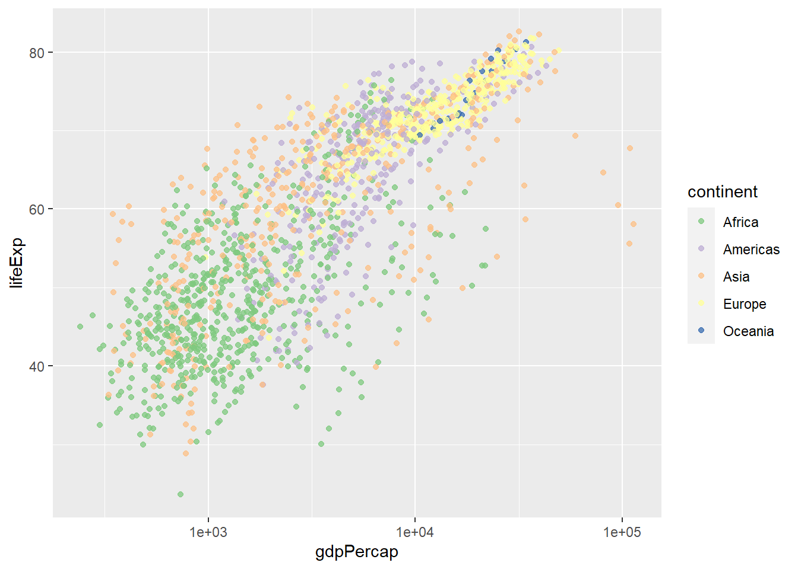
Versuche nun noch zusätzlich die y-Achse zu logarithmieren. Außerdem kannst du in die Dokumentation von scale_color_brewer() gucken, um andere Farbpaletten für das Argument palette zu finden und auszuprobieren. Dies könnte beispielsweise so aussehen.
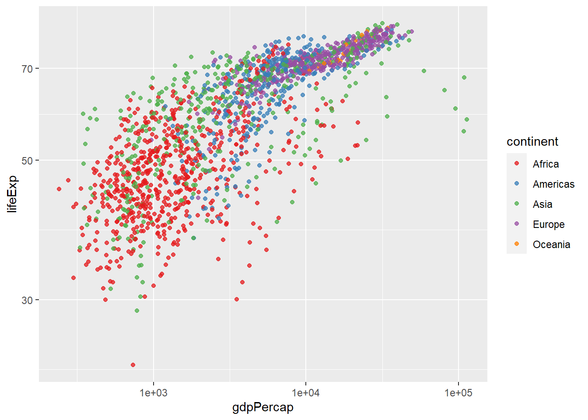
Zum Abschluss der ggplot2-Einheit, wollen wir besprechen, wie wir unsere Grafik verschönern können. Das hilft uns, um noch mehr Erkenntnisse mit unseren Grafiken vermitteln zu können. Zeitgleich wirken hübsch konstruierte Grafiken ansprechender auf den Leser, was sich auf positiv auf eure Glaubwürdigkeit auswirken kann. Glücklicherweise kann man in ggplot2 (fast) jeden Aspekt einer Grafik beliebig verändern. Aber wie ihr von Onkel Ben wisst: Mit großer Macht kommt große Verantwortung. Also wählt eure individuellen Anpassungen sinnvoll.
Ihr solltet eure Daten immer sinnvoll beschriften. Namen wie lifeExp sind fürs Programmieren zwar sinnvoll, aber für einen menschlichen Leser sehr abstrakt. Sorgt durch sinnvoll Beschriftung für ein tolles Leseerlebnis. Dies wird durch eine labs() Schicht erzeugt. Beispielsweise so.
ggplot(data = gapminder, mapping = aes(x = gdpPercap, y = lifeExp, col = continent)) +
geom_point(alpha = 0.75) +
scale_x_log10() +
scale_color_brewer(palette = 'Accent') +
labs(x = 'BIP (inflationsbereinigt, in USD)')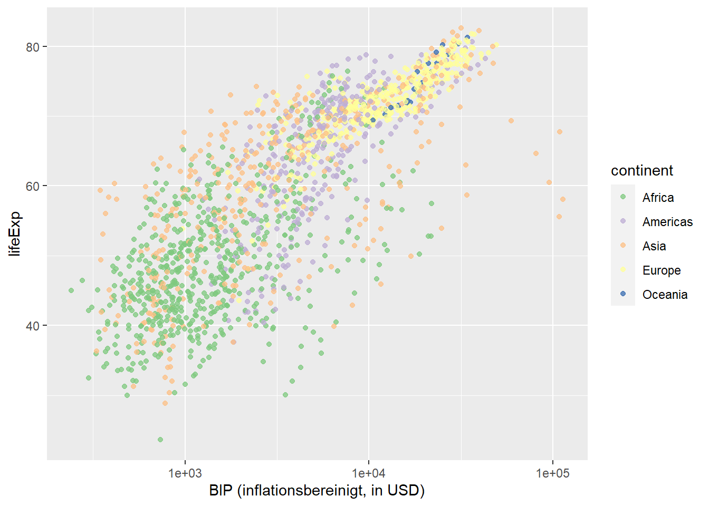
In der gleichen Schicht kann man auch zeitgleich alle anderen Beschriftungen verändern und sogar Überschriften hinzufügen. Wir einen Blick in die Dokumentation von labs() und schau nach, welche Argumente dafür verantwortlich sind. Erzeuge dann die folgende Grafik.
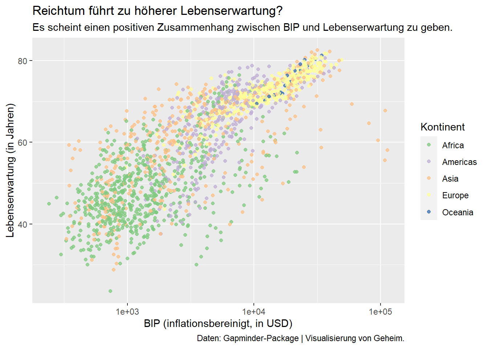
Die Änderung der Achsenbeschriftung ist ein bisschen tricky. Hier kann man die labs()-Funktion nicht verwenden. Stattdessen muss man das entsprechende Aesthetic direkt über die scale_*() Schicht ansprechen. Für die x-Achse könnten man folgendermaßen vorgehen.
ggplot(data = gapminder, mapping = aes(x = gdpPercap, y = lifeExp, col = continent)) +
geom_point(alpha = 0.75) +
scale_x_log10(
breaks = c(1000, 10000, 100000),
labels = c('1000', '10000', 'Hunderttausend')
) +
scale_color_brewer(palette = 'Accent') +
labs(x = 'BIP (inflationsbereinigt, in USD)')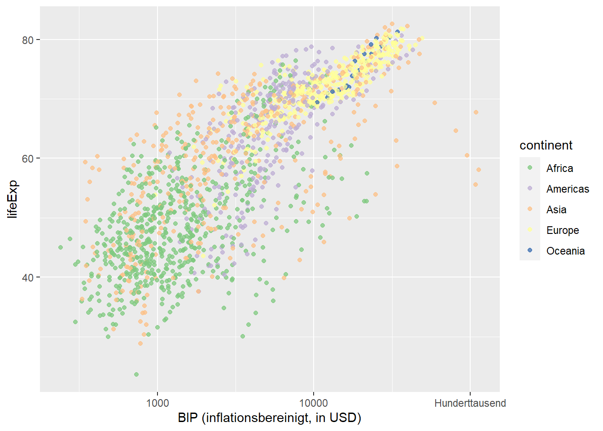
In der scale_x_log10() Schicht wurden die die breaks (die Stellen wo eine Beschriftung gesetzt werden soll) und labels (die Textbeschrifungen - gekennzeichnet durch ' ' oder " ") bestimmt. Diese Informationen wurden gesammelt als Vektor (mit c()) übergeben. Natürlich sollten breaks und labels die gleiche Länge haben. Falls ihr das mal vergesst, dann merkt ihr es schnell, weil ggplot() ausrastet und euch mit Fehlermeldungen beschmeißt. Nutze nun die neugewonnene Technik, um scale_y_continuous() zu verändern.
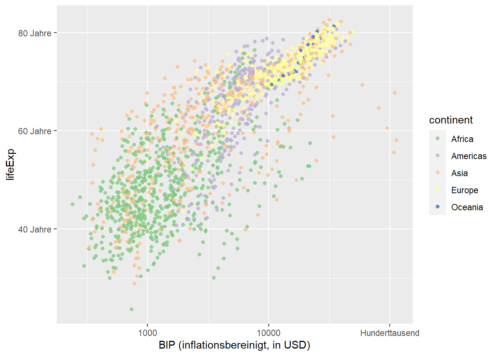
Die größte und schnellste visuelle Veränderung erhält man, indem man eine vordefinierte theme_*() Schicht zur Grafik hinzufügt.
ggplot(data = gapminder, mapping = aes(x = gdpPercap, y = lifeExp, col = continent)) +
geom_point(alpha = 0.75) +
scale_x_log10() +
scale_color_brewer(palette = 'Accent') +
theme_minimal()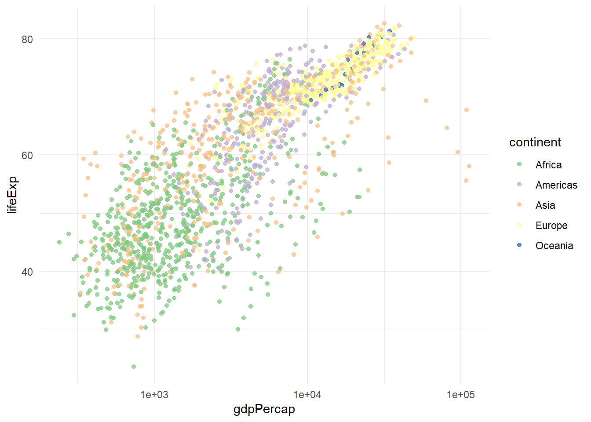
Schau mal in die Dokumentation von theme_minimal(). Dort sind noch weitere vordefinierte Designs aufgelistet. Probier ein paar davon aus.
theme()Vordefinierte Themes können mit einer weiteren theme() angepasst werden. Gucken wir doch mal in dessen Dokumentation.
theme(
line,
rect,
text,
title,
aspect.ratio,
axis.title,
axis.title.x,
axis.title.x.top,
axis.title.x.bottom,
axis.title.y,
axis.title.y.left,
axis.title.y.right,
axis.text,
axis.text.x,
axis.text.x.top,
axis.text.x.bottom,
axis.text.y,
axis.text.y.left,
axis.text.y.right,
axis.ticks,
axis.ticks.x,
axis.ticks.x.top,
axis.ticks.x.bottom,
axis.ticks.y,
axis.ticks.y.left,
axis.ticks.y.right,
axis.ticks.length,
axis.ticks.length.x,
axis.ticks.length.x.top,
axis.ticks.length.x.bottom,
axis.ticks.length.y,
axis.ticks.length.y.left,
axis.ticks.length.y.right,
axis.line,
axis.line.x,
axis.line.x.top,
axis.line.x.bottom,
axis.line.y,
axis.line.y.left,
axis.line.y.right,
legend.background,
legend.margin,
legend.spacing,
legend.spacing.x,
legend.spacing.y,
legend.key,
legend.key.size,
legend.key.height,
# drüben gehts weiter legend.key.width,
legend.text,
legend.text.align,
legend.title,
legend.title.align,
legend.position,
legend.direction,
legend.justification,
legend.box,
legend.box.just,
legend.box.margin,
legend.box.background,
legend.box.spacing,
panel.background,
panel.border,
panel.spacing,
panel.spacing.x,
panel.spacing.y,
panel.grid,
panel.grid.major,
panel.grid.minor,
panel.grid.major.x,
panel.grid.major.y,
panel.grid.minor.x,
panel.grid.minor.y,
panel.ontop,
plot.background,
plot.title,
plot.title.position,
plot.subtitle,
plot.caption,
plot.caption.position,
plot.tag,
plot.tag.position,
plot.margin,
strip.background,
strip.background.x,
strip.background.y,
strip.placement,
strip.text,
strip.text.x,
strip.text.y,
strip.switch.pad.grid,
strip.switch.pad.wrap,
...,
complete = FALSE,
validate = TRUE
)Holy shit! Das sind verdammt viele Argumente für eine Funktion. Ich habe nicht gelogen als ich sagte, dass wir fast alles an einer Grafik verändern können. Jedes Argument in dieser Funktion steuert einen Grafikaspekt wie Schriftgröße oder Liniendicke oder Position von Titeln usw. Aber keine Angst: Wenn man nicht will, dann muss man keins der Argumente auch tatsächlich befüllen. Es sind für alle Aspekte der Grafik bereits Standardeinstellungen hinterlegt.
Lass uns also einmal durchgehen, wie man diese Funktion benutzt, wenn man ein Teil der Grafik gezielt verändern möchte. Lass uns doch die Legende an einen anderen Ort verfrachten. Gucken wir also die Liste der Argumente von theme() durch und gucken uns an, welche Argumente sich richtig anhören. Dabei könnten wir die folgenden Argumente entdecken.
legend.background
legend.margin
legend.spacing
legend.spacing.x
legend.spacing.y
legend.key
legend.key.size
legend.key.height
legend.key.width
legend.text
legend.text.alignlegend.title
legend.title.align
legend.position
legend.direction
legend.justification
legend.box
legend.box.just
legend.box.margin
legend.box.background
legend.box.spacingDie Dinger schreien ja förmlich nach Legende. Und besonders legend.position klingt nach dem was wir brauchen. Die Dokumentation beschreibt dieses Argument mit
the position of legends ("none", "left", "right", "bottom", "top", or two-element numeric vector)
Klingt also recht simpel. Probieren wir es mal.
ggplot(data = gapminder, mapping = aes(x = gdpPercap, y = lifeExp, col = continent)) +
geom_point(alpha = 0.75) +
scale_x_log10() +
scale_color_brewer(palette = 'Accent') +
theme_minimal() +
theme(
legend.position = c(0.9, 0.2) # Vektor wieder mit c() erstellt
# Zahlen sind zwischen 0 und 1 (also ganz links/unten oder ganz rechts/oben)
)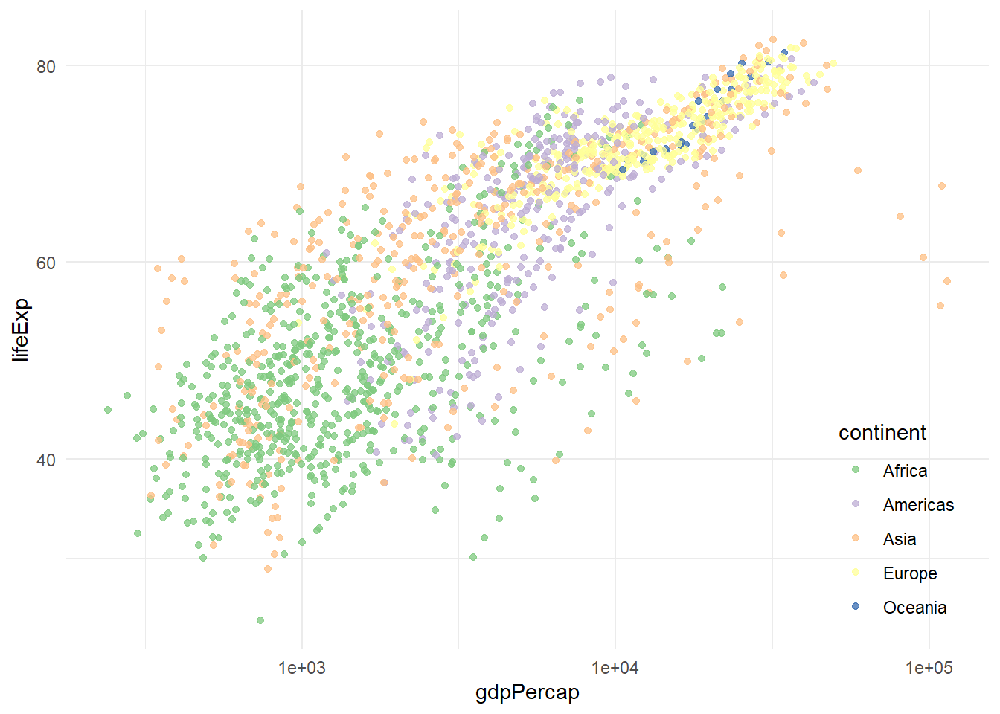
Das hat ja schon mal gut geklappt. Spürst du schon die ungeheure Macht, die wir über diese Grafik haben? Aber wir brauchen mehr! Die Legende ist jetzt zwar im Bild, aber die Linien vom Koordinatensystem stören beim Lesen. Es wird Zeit, legend.background anzupassen. Dessen Beschreibung in der Dokumentation liefert
background of legend (element_rect(); inherits from rect)
Hier wird irgendwas von einer Funktion element_rect() geschwafelt. Schauen wir mal an, wie das in Action aussieht und dann gibts eine Erklärung.
ggplot(data = gapminder, mapping = aes(x = gdpPercap, y = lifeExp, col = continent)) +
geom_point(alpha = 0.75) +
scale_x_log10() +
scale_color_brewer(palette = 'Accent') +
theme_minimal() +
theme(
legend.position = c(0.9, 0.2), # Vektor wieder mit c() erstellt
legend.background = element_rect(
colour = 'black',
fill = 'white'
)
)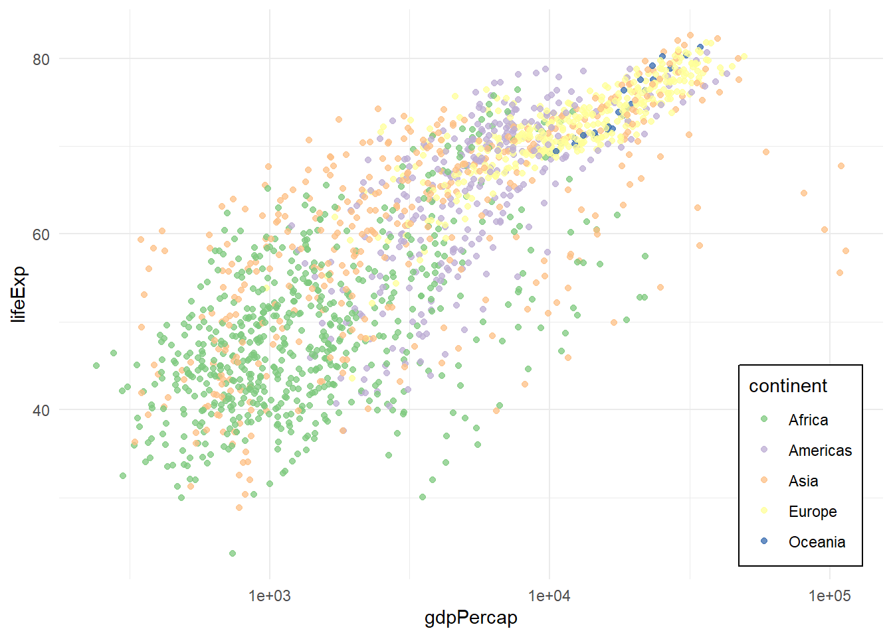
Aha! legend.background = element_rect(colour = 'black', fill = 'white') hat die Legende nun auf ein Rechteck mit schwarzer Umrandung und weißer Fläche gezeichnet. Das ist also der Verdienst von element_rect(). In der Sprache von ggplot2 ist legend.background ein “rechteckiges Element”. Deshalb erwartet das entsprechende Argument in theme() auch einen entsprechenden Input. Diesen bekommen wir, indem wir die Funktion element_rect() aufrufen und darin die Rechteckspezifikationen wie Farbe und Füllung bestimmen. Das liefert und dann das gewünschte rechteckige Element und wird an legend.position übergeben. Damit ist legend.position ein zufriedenes Element und befolgt unsere Wünsche. Man muss Argumenten einfach nur das geben, was sie wollen und dann machen sie was man will. Bestechung funktioniert in ggplot2 hervorragend.
Du ahnst es vielleicht schon. Es gibt neben element_rect() noch andere Elemente. Glücklicherweise sind es nicht allzu viele und sie sind alle in der gleichen Dokumentation aufgelistet. Wenn du also in die Dokumentation von element_rect() guckst, siehst du alle anderen Elementfunktionen und deren Argumente.
element_blank()
element_text(
family = NULL,
face = NULL,
colour = NULL,
size = NULL,
hjust = NULL,
vjust = NULL,
angle = NULL,
lineheight = NULL,
color = NULL,
margin = NULL,
debug = NULL,
inherit.blank = FALSE
)element_rect(
fill = NULL,
colour = NULL,
size = NULL,
linetype = NULL,
color = NULL,
inherit.blank = FALSE
)
element_line(
colour = NULL,
size = NULL,
linetype = NULL,
lineend = NULL,
color = NULL,
arrow = NULL,
inherit.blank = FALSE
)Die Logik hinter diesen Funktionen ist für all diese Funktionen gleich.
theme() nutzen, um eine Linie zu verändern (bspw. das Gitter des Koordinatensystems), so verwendet ihr geom_line().theme() nutzen, um einen Text zu verändern (bspw. das Schriftart der Überschriften), so verwendet ihr geom_text().theme() nutzen, um einen Element verschwinden zu lassen, so verwendet ihr geom_blank.Die Dokumentation von theme() sagt euch außerdem, welches Element es erwartet. Hier ein Beispiel, dass unsere gelernten Aspekte kombiniert.
ggplot(
data = gapminder,
mapping = aes(x = gdpPercap, y = lifeExp, col = continent, size = gdpPercap)
) +
geom_point(alpha = 0.75) +
scale_x_log10(
breaks = c(1000, 10000, 100000),
labels = c('Wenig', 'Viel', 'Viel Viel')
) +
scale_color_brewer(palette = 'Set1') +
labs(
x = 'BiP (iNfLaTiOnSbErEiNiGt, in USD)',
y = 'LeBeNsErWaRtUnG',
col = 'KonNtIneNt',
title = 'Reichtum führt zu höherer Lebenserwartung?',
subtitle = 'Es scheint einen positiven Zusammenhang zwischen BIP und Lebenserwartung zu geben.',
caption = 'Daten: Gapminder-Package | Visualisierung von Geheim.'
) +
theme_bw() +
theme(
legend.position = 'top',
text = element_text(face = 'bold.italic', color = 'pink'),
axis.text = element_text(
angle = 30,
face = 'bold.italic',
color = 'pink',
size = 16
),
plot.background = element_rect(fill = 'grey40'),
plot.caption = element_text(angle = 180),
panel.background = element_rect(fill = 'green', color = 'red', size = 4),
panel.grid.major = element_line(linetype = 2, color = 'black', size = 2),
panel.grid.minor = element_blank()
)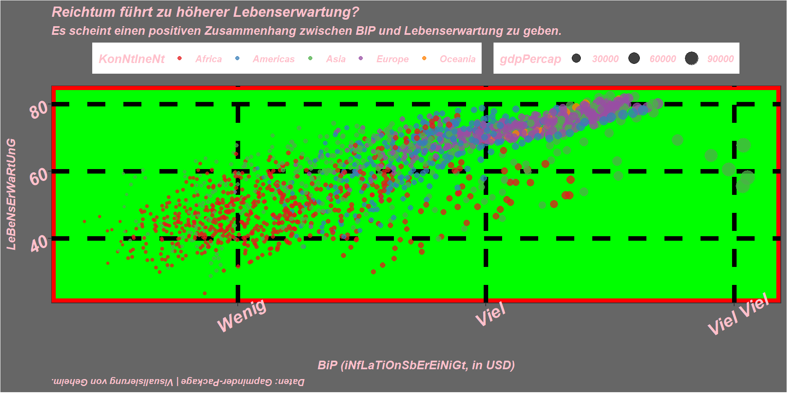
Ist das eine schöne Grafik? Nein! Ganz sicher nicht. Aber das ist auch nicht der Punkt. Schöne Grafiken zu erstellen ist eine Kunst. Wohingegen hässliche Grafiken zu erstellen, eine tolle Möglichkeit ist, sorgenfrei ggplot2 zu üben. Ihr braucht euch also keine Gedanken zu machen, ob eure Grafik am Ende des Tages “gut” oder “richtig” ist. Tobt euch einfach aus und testet, was ihr in ggplot2 verändern könnt.